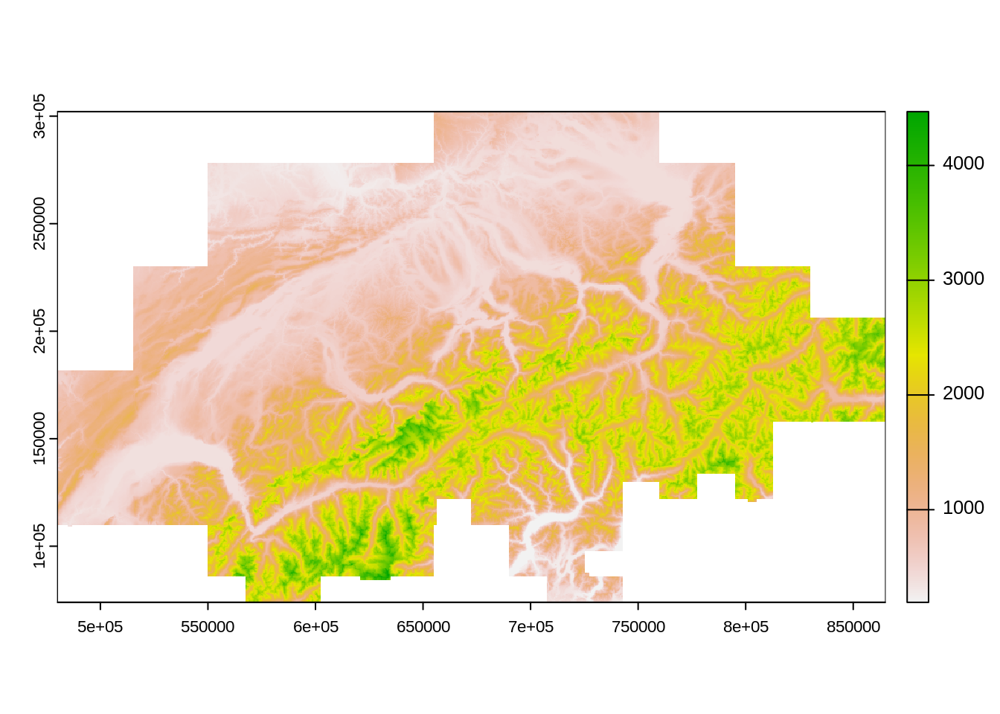
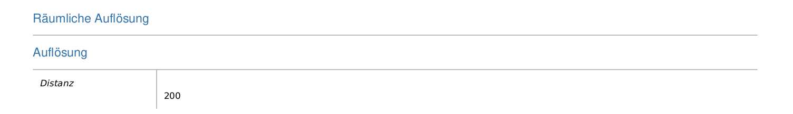

library("sf")
library("tmap")Übung 3
Einfache Rasterdaten
Vorbereitung
Installiere zudem das R Package terra
Erstelle dann ein neues R Script mit dem Namen Uebung_3.R und lade darin die libraries sf sowie tmap.
Übung 3.1
- Such das digitale Höhenmodell der Schweiz (200m Auflösung)
- Auch hier kannst du die folgenden Adressen nutzen:
- Entzippe das File (sofern nötig) und schau dir den Inhalt an
Input: Raster Datenformate
Inhalt des heruntergeladenen zip-Files:
- Eigentliche Daten:
- DHM200_polyface.dxf
- DHM200.asc
- DHM200.xyz
- Metadaten und Lizenzbedigungen:
- license.txt
- Metadata_gm03.xml
- Metadata_PDF.pdf
- Metadata_xml_iso19139.xml
Der gleiche Datensatz (DHM25 200) in 3 unterschiedlichen Datenformaten:
- DHM200.asc
- DHM200.xyz
DHM200_polyface.dxf(← CAD bereich)
ESRI ArcInfo ASCII Grid
- Dateierweiterung *.asc
- ein Datenformat von ESRI (siehe die Spezifikationen)
- beginnt mit mehreren Zeilen Metaadaten, darauf folgen die eigentlichen Werte
- kann in einem Texteditor geöffnet werden:
NCOLS 1926
NROWS 1201
XLLCORNER 479900.
YLLCORNER 61900.
CELLSIZE 200.
NODATA_VALUE -9999.
-9999. -9999. -9999. -9999. -9999. -9999. -9999. -9999. -9999. -9999. -9999. -9999.
...
...
...
835.415 863.55 887.424 869.213 855.539 845.878 829.714 815.258 807.458 799.816 799.2
ASCII Gridded XYZ
- Dateierweiterung *.xyz
- Ein offenes Format
- Beinhaltet 3 Spalten: x- und y- Koordinaten sowie Zellwert
- kann in einem Texteditor geöffnet werden:
655000.00 302000.00 835.01
655200.00 302000.00 833.11
655400.00 302000.00 831.20Raster in R
Um Rasterdaten in R zu importieren verwenden wir das Package terra.
install.packages("terra")library("terra")terra 1.7.39dhm200 <- rast("data/original/dhm25_200/DHM200.xyz")- Aus
terrabenötigen wir die Funktionrast - das Importieren funktioniert gleich, unabhängig von der Dateierweiterung
- eine summarische Zusammenfassung erhält man via Konsole:
dhm200class : SpatRaster
dimensions : 1141, 1926, 1 (nrow, ncol, nlyr)
resolution : 200, 200 (x, y)
extent : 479900, 865100, 73900, 302100 (xmin, xmax, ymin, ymax)
coord. ref. :
source : DHM200.xyz
name : DHM200
min value : 193.00
max value : 4556.63 plot(dhm200) # für einfache visualisierungen
Übung 3.2
In welchem Koordinatensystem befindet sich dieses Höhenmodell?
Tipp: Konsultiere die Metadaten!
Übung 3.2
Wie hoch ist die Auflösung?
Lösung

→ 200 Meter
Übung 3.3
Importiere DHM200 in R und schau dir das Objekt in der Konsole sowie mit plot() an.
Input: Koordinatenbezugssystem festlegen
- Das Koordinatenbezugssystem haben wir bereits für Vektordaten festgelegt
- dabei haben wir folgenden Befehl verwendet:
st_crs(meinvektordatensatz) <- 21781(← für das alte Schweizer Koordinatenbezugssystem)- für Rasterdaten funktioniert es leicht anders:
crs(dhm200) <- "epsg: 21781"crs()stattst_crs"epsg: 21781"(mit Anführungs- und Schlusszeichen) statt21781
dhm200class : SpatRaster
dimensions : 1141, 1926, 1 (nrow, ncol, nlyr)
resolution : 200, 200 (x, y)
extent : 479900, 865100, 73900, 302100 (xmin, xmax, ymin, ymax)
coord. ref. : CH1903 / LV03 (EPSG:21781)
source : DHM200.xyz
name : DHM200
min value : 193.00
max value : 4556.63 Input: Koordinatenbezugssystem transformieren
- Koordinatenbezugssystem von
dhm200:CH1903 LV03bzw.EPSG: 21781 - Analog Vektordaten: in das neue Schweizer Koordinatenbezugssytem transformieren
- Vektordaten: Funktion
st_transform - Rasterdaten: Funktion
project
dhm200_2056 <- project(dhm200, "epsg: 2056")dhm200class : SpatRaster
dimensions : 1141, 1926, 1 (nrow, ncol, nlyr)
resolution : 200, 200 (x, y)
extent : 479900, 865100, 73900, 302100 (xmin, xmax, ymin, ymax)
coord. ref. : CH1903 / LV03 (EPSG:21781)
source : DHM200.xyz
name : DHM200
min value : 193.00
max value : 4556.63 dhm200_2056class : SpatRaster
dimensions : 1141, 1926, 1 (nrow, ncol, nlyr)
resolution : 200, 200 (x, y)
extent : 2479900, 2865100, 1073900, 1302100 (xmin, xmax, ymin, ymax)
coord. ref. : CH1903+ / LV95 (EPSG:2056)
source(s) : memory
name : DHM200
min value : 193.000
max value : 4555.624 Übung 3.4
- Transformiere
dhm200in das KoordinatenbezugssystemCH1903+ LV95 - Speichere den Output als
dhm200_2056
Übung 3.5
Visualisiere dhm200_2056 mit tmap.
Tipp: Um ein Polygon zu visualisieren sind wir wie folgt vorgegangen
tm_shape(gemeindegrenzen) + tm_polygons()Übung 3.6
Verändere die Darstellungsweise des Rasters mithilfe von style und palette. Tipp, schau dir die Hilfe von ?tm_raster an.
Input Raster exportieren
- Wir haben das DHM auf unsere Bedürfnisse angepasst (CRS gesetzt und transformiert)
- Wir können unser verändertes Objekt (
dhm200_2056) exportieren, so dass diese Änderungen abgespeichert werden
#| eval: false
#|
writeRaster(dhm200_2056,"data/processed/dhm200_2056.tif", overwrite = TRUE)- beim Import ist die CRS Information bekannt (CRS setzen und transformieren ist nicht mehr nötig)
dhm200_2056 <- rast("data/processed/dhm200_2056.tif")
dhm200_2056class : SpatRaster
dimensions : 1141, 1926, 1 (nrow, ncol, nlyr)
resolution : 200, 200 (x, y)
extent : 2479900, 2865100, 1073900, 1302100 (xmin, xmax, ymin, ymax)
coord. ref. : CH1903+ / LV95 (EPSG:2056)
source : dhm200_2056.tif
name : DHM200
min value : 193.000
max value : 4555.624 Übung 3.7
Exportiere dhm200_2056 als tif File
Rückblick
Wir haben…
- ein Höhenmodell der Schweiz heruntergeladen
- 3 unterschiedliche Datenformaten von Rasterdaten kennengelernt
- ein Rasterdatensatz mithilfe von
rastausterrain R importiert - diesem Rasterdatensatz das korrekte Koordinatenbezugssystem zugewiesen (
crs) - diesen Rasterdatensatz in ein anderes Koordinatensystem transformiert (
project) - diesen Rasterdatensatz mit
plot()sowietmapvisualisert - mit verschiedenen Darstellungformen in
tmapgearbeitet (optionenstyleundpalette) - DHM: ein Wert pro Zelle. Es gibt aber Situationen, wo wir mehreren Werten pro Zelle benötigen